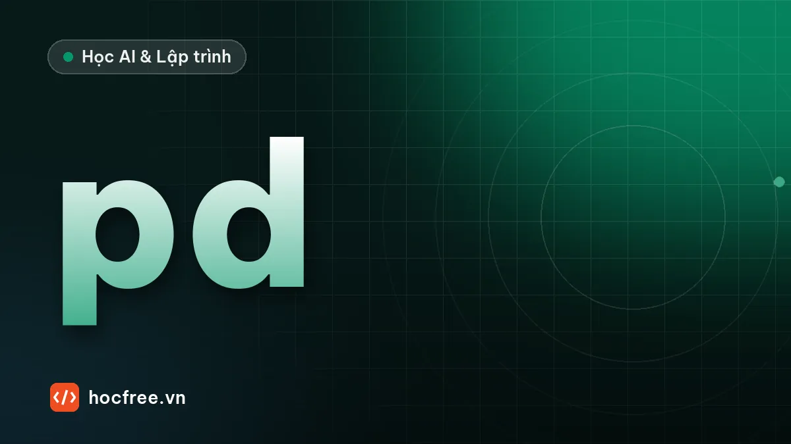

pandas cơ bản: DataFrame, lọc, groupby, làm sạch, xuất Excel
Xử lý bảng dữ liệu bằng pandas: read_csv, lọc với loc, thêm cột, xử lý giá trị thiếu, groupby, agg, merge và xuất CSV, Excel.

Học xong bài này, bạn sẽ
- Đọc CSV, Excel thành DataFrame và xem nhanh dữ liệu
- Lọc, thêm cột, xử lý giá trị thiếu
- Nhóm, tổng hợp và xuất kết quả
Nên học trước: SQLAlchemy 2.0 ORM
Nội dung bài viết
Bạn đã xử lý CSV bằng module csv và vòng lặp. Với bảng vài chục nghìn dòng cần lọc, nhóm, tính tổng, nối hai bảng, cách đó dài và chậm. pandas là thư viện xử lý dữ liệu dạng bảng phổ biến nhất của Python: một dòng pandas thường thay cho cả chục dòng vòng lặp. Python Developer làm tự động hóa, backend hay dữ liệu đều dùng pandas thường xuyên.
1. DataFrame và Series
Cài: uv add pandas openpyxl (openpyxl để đọc ghi Excel). Bài dùng pandas 3.x.
import pandas as pd
df = pd.DataFrame({
"ngay": ["2026-10-01", "2026-10-01", "2026-10-02", "2026-10-03", "2026-10-03", "2026-10-04"],
"san_pham": ["Cà phê", "Trà sữa", "Cà phê", "Bánh mì", "Trà sữa", "Cà phê"],
"so_luong": [3, 2, 5, 4, None, 2],
"don_gia": [25000, 35000, 25000, 20000, 35000, 27000],
})
print(df)
print(df.shape, list(df.columns))
print(type(df["san_pham"]).__name__, df["don_gia"].mean()) ngay san_pham so_luong don_gia
0 2026-10-01 Cà phê 3.0 25000
1 2026-10-01 Trà sữa 2.0 35000
2 2026-10-02 Cà phê 5.0 25000
3 2026-10-03 Bánh mì 4.0 20000
4 2026-10-03 Trà sữa NaN 35000
5 2026-10-04 Cà phê 2.0 27000
(6, 4) ['ngay', 'san_pham', 'so_luong', 'don_gia']
Series 27833.333333333332DataFrame là bảng (dòng × cột), mỗi cột là một Series có kiểu dữ liệu riêng. Cột bên trái là index (nhãn dòng, mặc định 0, 1, 2...). NaN là giá trị thiếu; vì cột so_luong có giá trị thiếu nên pandas lưu nó dạng số thực (3.0).
2. Đọc dữ liệu và xem nhanh
import pandas as pd
from pathlib import Path
Path("ban_hang.csv").write_text(
"ngay,san_pham,so_luong,don_gia\n"
"2026-10-01,Cà phê,3,25000\n2026-10-01,Trà sữa,2,35000\n2026-10-02,Cà phê,5,25000\n"
"2026-10-03,Bánh mì,4,20000\n2026-10-03,Trà sữa,,35000\n2026-10-04,Cà phê,2,27000\n",
encoding="utf-8",
)
df = pd.read_csv("ban_hang.csv", parse_dates=["ngay"])
df.info()
print(df.describe().loc[["mean", "max"]])<class 'pandas.DataFrame'>
RangeIndex: 6 entries, 0 to 5
Data columns (total 4 columns):
# Column Non-Null Count Dtype
--- ------ -------------- -----
0 ngay 6 non-null datetime64[us]
1 san_pham 6 non-null str
2 so_luong 5 non-null float64
3 don_gia 6 non-null int64
dtypes: datetime64[us](1), float64(1), int64(1), str(1)
memory usage: 324.0 bytes
ngay so_luong don_gia
mean 2026-10-02 08:00:00 3.2 27833.333333
max 2026-10-04 00:00:00 5.0 35000.000000pd.read_csvtự đoán kiểu từng cột;parse_dateschuyển cột ngày thành kiểu thời gian. Tương tự:pd.read_excel("file.xlsx", sheet_name=...),pd.read_json,pd.read_sql.- Ba lệnh luôn chạy đầu tiên với dữ liệu mới:
df.head()(vài dòng đầu),df.info()(kiểu cột, số giá trị thiếu),df.describe()(thống kê nhanh). - Từ pandas 3.0, cột văn bản có kiểu
strriêng thay vìobjectnhư các bản cũ.
3. Chọn và lọc
import pandas as pd
df = pd.read_csv("ban_hang.csv", parse_dates=["ngay"])
print(df[["san_pham", "don_gia"]].head(2)) # chọn nhiều cột: list tên cột
ca_phe = df[df["san_pham"] == "Cà phê"] # lọc dòng bằng điều kiện
print(len(ca_phe))
print(df[(df["don_gia"] >= 25000) & (df["ngay"] < "2026-10-03")].index.tolist())
print(df[df["san_pham"].isin(["Bánh mì", "Trà sữa"])]["so_luong"].sum())
print(df.loc[2, "san_pham"], df.loc[df["so_luong"] > 3, ["ngay", "so_luong"]].shape) san_pham don_gia
0 Cà phê 25000
1 Trà sữa 35000
3
[0, 1, 2]
6.0
Cà phê (2, 2)Điều kiện kết hợp dùng & (và), | (hoặc), ~ (phủ định), mỗi điều kiện đặt trong ngoặc; không dùng and, or. df.loc[dòng, cột] chọn theo nhãn, nhận cả điều kiện; df.iloc[i, j] chọn theo vị trí số.
4. Thêm cột, xử lý giá trị thiếu
import pandas as pd
df = pd.read_csv("ban_hang.csv", parse_dates=["ngay"])
print(df["so_luong"].isna().sum(), "giá trị thiếu")
df["so_luong"] = df["so_luong"].fillna(0).astype(int) # hoặc df.dropna(subset=["so_luong"])
df["thanh_tien"] = df["so_luong"] * df["don_gia"] # phép tính trên cả cột, không cần vòng lặp
df["thu"] = df["ngay"].dt.day_name()
df["loai"] = df["san_pham"].map({"Cà phê": "Đồ uống", "Trà sữa": "Đồ uống", "Bánh mì": "Đồ ăn"})
print(df[["san_pham", "so_luong", "thanh_tien", "thu", "loai"]].tail(3))1 giá trị thiếu
san_pham so_luong thanh_tien thu loai
3 Bánh mì 4 80000 Saturday Đồ ăn
4 Trà sữa 0 0 Saturday Đồ uống
5 Cà phê 2 54000 Sunday Đồ uốngPhép toán trên cột được vector hóa: viết như phép tính trên một số nhưng áp cho mọi dòng, nhanh hơn vòng lặp Python hàng chục lần. .dt truy cập thuộc tính ngày giờ, .str truy cập phương thức chuỗi (df["ten"].str.upper(), .str.contains("phê")), .map(dict) ánh xạ giá trị.
df[df["gia"] > 0]["gia"] = 1 (lọc rồi gán, gọi là gán chuỗi) không sửa df: từ pandas 3.0, mọi kết quả lọc hành xử như một bản sao. Gán có điều kiện phải dùng một lệnh .loc duy nhất: df.loc[df["gia"] > 0, "gia"] = 1.5. Nhóm và tổng hợp
import pandas as pd
df = pd.read_csv("ban_hang.csv", parse_dates=["ngay"])
df["so_luong"] = df["so_luong"].fillna(0)
df["thanh_tien"] = df["so_luong"] * df["don_gia"]
theo_sp = (df.groupby("san_pham")
.agg(so_don=("ngay", "count"), so_luong=("so_luong", "sum"), doanh_thu=("thanh_tien", "sum"))
.sort_values("doanh_thu", ascending=False))
print(theo_sp)
print(df.groupby(df["ngay"].dt.day)["thanh_tien"].sum().to_dict())
print(df.pivot_table(index="ngay", columns="san_pham", values="thanh_tien", aggfunc="sum", fill_value=0).iloc[:2]) so_don so_luong doanh_thu
san_pham
Cà phê 3 10.0 254000.0
Bánh mì 1 4.0 80000.0
Trà sữa 2 2.0 70000.0
{1: 145000.0, 2: 125000.0, 3: 80000.0, 4: 54000.0}
san_pham Bánh mì Cà phê Trà sữa
ngay
2026-10-01 0.0 75000.0 70000.0
2026-10-02 0.0 125000.0 0.0groupby(cột).agg(tên_mới=(cột, hàm)) là mẫu tổng hợp quan trọng nhất: tương đương GROUP BY trong SQL. pivot_table tạo bảng chéo giống PivotTable của Excel. Cột so_luong và doanh_thu là số thực vì cột số lượng gốc có giá trị thiếu.
6. Nối bảng và xuất kết quả
import pandas as pd
don = pd.DataFrame({"ma_kh": ["K1", "K2", "K1", "K3"], "tong": [450_000, 1_200_000, 90_000, 300_000]})
khach = pd.DataFrame({"ma_kh": ["K1", "K2", "K4"], "ten": ["An", "Bình", "Dũng"]})
gop = don.merge(khach, on="ma_kh", how="left") # giống LEFT JOIN
print(gop)
gop.to_csv("don_hang.csv", index=False, encoding="utf-8-sig") # utf-8-sig để Excel đọc đúng dấu
gop.to_excel("don_hang.xlsx", index=False, sheet_name="Đơn hàng") ma_kh tong ten
0 K1 450000 An
1 K2 1200000 Bình
2 K1 90000 An
3 K3 300000 NaNmerge(how="left") giữ mọi dòng bảng trái; khách K3 không có trong bảng khách nên tên là NaN, dấu hiệu dữ liệu không nhất quán cần kiểm tra. how="inner" chỉ giữ dòng khớp cả hai bên. Ghép nhiều bảng cùng cột theo chiều dọc (như gộp file Excel các chi nhánh): pd.concat([df1, df2], ignore_index=True).
Tóm tắt
read_csv/read_excel; xem bằnghead,info,describe.- Chọn
df[["a", "b"]]; lọcdf[(dk1) & (dk2)];loctheo nhãn,iloctheo vị trí. - Cột mới bằng phép tính vector hóa;
fillna,dropna,.dt,.str,.map; gán có điều kiện bằng.loc. groupby().agg(),pivot_table,merge,concat; xuấtto_csv(encoding="utf-8-sig"),to_excel.
Bài tập
Bài 1. Doanh thu theo tháng và sản phẩm
Với dữ liệu bán hàng mẫu dưới đây, tính doanh thu theo tháng, và theo sản phẩm sắp giảm dần.
Xem đáp án
import pandas as pd
df = pd.DataFrame({
"ngay": pd.to_datetime(["2026-09-28", "2026-09-30", "2026-10-02", "2026-10-15", "2026-10-15"]),
"san_pham": ["Cà phê", "Bánh mì", "Cà phê", "Trà sữa", "Cà phê"],
"so_luong": [4, 10, 6, 3, 2],
"don_gia": [25000, 20000, 25000, 35000, 27000],
})
df["thanh_tien"] = df["so_luong"] * df["don_gia"]
print(df.groupby(df["ngay"].dt.to_period("M"))["thanh_tien"].sum())
print(df.groupby("san_pham")["thanh_tien"].sum().sort_values(ascending=False))ngay
2026-09 300000
2026-10 309000
Freq: M, Name: thanh_tien, dtype: int64
san_pham
Cà phê 304000
Bánh mì 200000
Trà sữa 105000
Name: thanh_tien, dtype: int64.dt.to_period("M") đổi ngày thành tháng để nhóm. Luôn kiểm tra tổng: 300.000 + 309.000 = 609.000 = 304.000 + 200.000 + 105.000. Hai cách nhóm cho cùng tổng doanh thu là dấu hiệu tính đúng.
Bài 2. Làm sạch dữ liệu bẩn
Cột ngay lẫn định dạng 29/10/2026 và 2026-10-29, cột tien có dạng "1.250.000", "90.000đ". Chuẩn hóa về kiểu ngày và số nguyên.
Xem đáp án
import pandas as pd
df = pd.DataFrame({"ngay": ["29/10/2026", "2026-10-28", "01/11/2026"],
"tien": ["1.250.000", "90.000đ", " 300000 "]})
df["ngay"] = pd.to_datetime(df["ngay"], format="mixed", dayfirst=True)
df["tien"] = df["tien"].str.replace(r"[^\d]", "", regex=True).astype(int)
print(df)
print(df["tien"].sum()) ngay tien
0 2026-10-29 1250000
1 2026-10-28 90000
2 2026-11-01 300000
1640000dayfirst=True rất quan trọng với dữ liệu Việt Nam: không có nó, 01/11/2026 bị hiểu là ngày 11 tháng 1 theo kiểu Mỹ. Regex [^\d] xóa mọi ký tự không phải chữ số, đúng với tiền đồng không có phần lẻ; với số có phần thập phân phải xử lý dấu chấm, dấu phẩy cẩn thận hơn.
Nguồn tham khảo: 10 minutes to pandas; Group by: split-apply-combine; Copy-on-Write; What's new in pandas 3.0.0.
Bài tập thực hành
- Từ dữ liệu bán hàng mẫu trong bài, tính doanh thu theo tháng và theo sản phẩm.
- Làm sạch cột ngày bị lẫn định dạng và cột tiền có dấu chấm phân cách.
Làm xong bài tập mới chuyển sang bài tiếp theo: tự viết code là cách duy nhất để nhớ lâu.